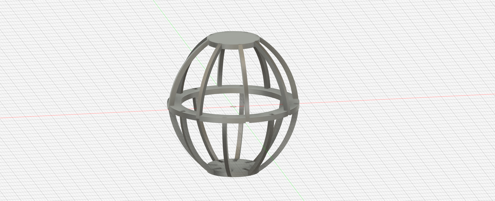
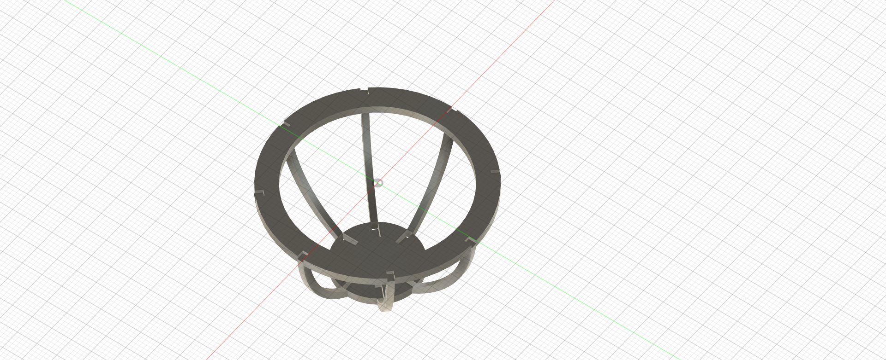
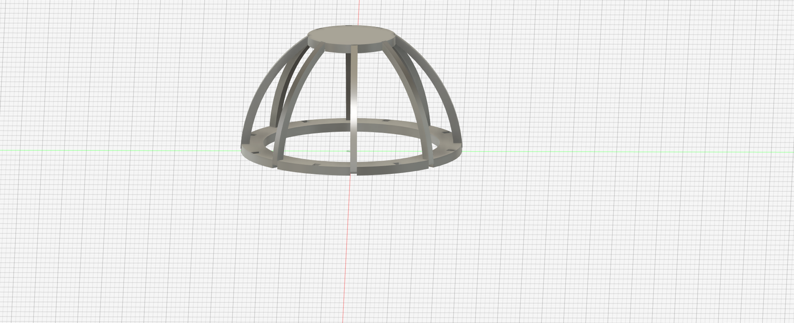
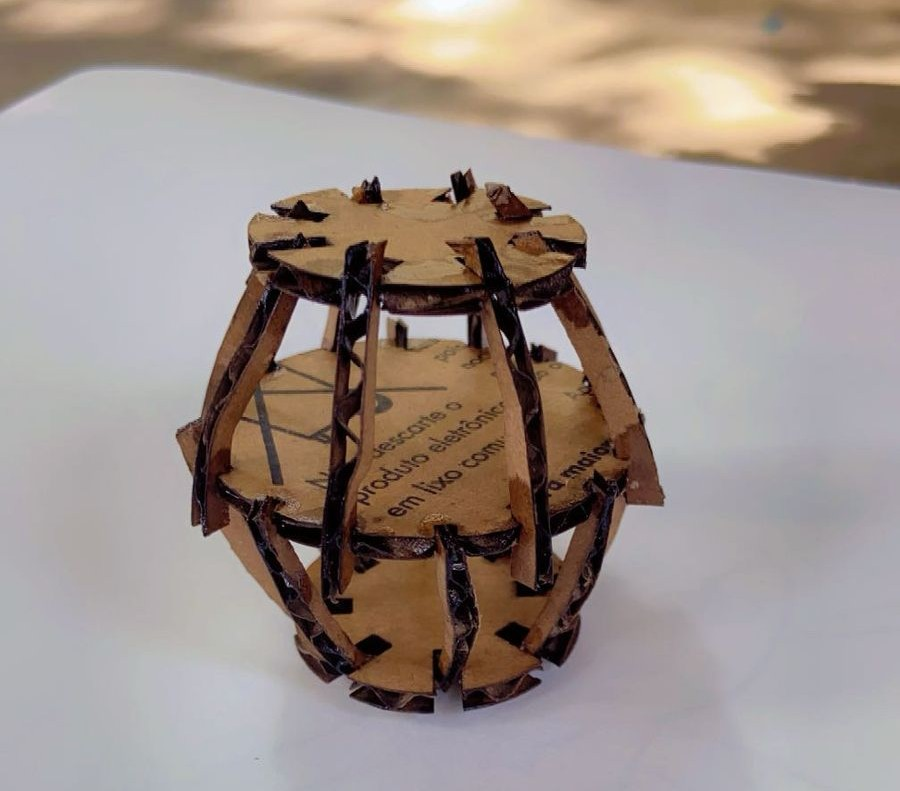
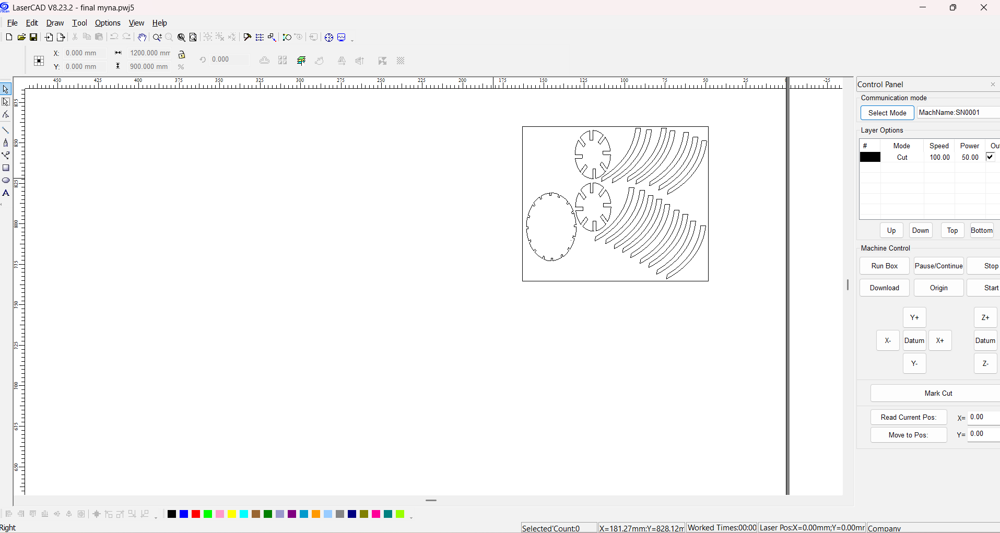

Design Methodology
1. Basic Structure
- Sphere: To define the overall shape.
- Ribs: Created using splines or arc-based sketches.
- Rings: Created using circles and cutouts for rib slots.

2. Dimensions and Number of Shapes
- Sphere diameter: 50 mm
- Ribs:
- Number of ribs: About 8 (based on spacing and look)
- Rib thickness: ~2 mm
- Rib height: 50 mm (same as sphere diameter)
- Rib spacing: 360° ÷ number of ribs.

3. Design the Horizontal Rings
Steps:
- Create a new sketch on the XZ plane.
- Draw a circle:
- Outer diameter = 50 mm
- Inner hole for light socket = 20 mm
- Thickness = 2 mm
- Cut slots in the ring:
- Draw thin slots to hold the ribs.
- Width of slots = rib thickness (2 mm).
- Number of slots = number of ribs.
- Extrude the ring:
- Extrude to a thickness of 2 mm.
- Create 2 to 3 rings:
- One at the top, one in the middle, and one at the bottom.

4. Steps in Fusion 360
- Create a sphere of diameter 50 mm as a reference.
- Sketch and extrude a rib profile (height = 50 mm, thickness = 2 mm).
- Use the circular pattern tool to replicate the rib around the sphere's center.
- Create a horizontal ring by sketching a circle and cutting out slots to fit the ribs.
- Use join or cut operations to make the assembly functional.
- Add fillets or chamfers to smooth out the edges.

5. Assembly and Final Touch
- Make sure the ribs fit properly into the ring slots.
- Adjust spacing and dimensions if needed.
- Use the Combine tool to merge all components into a single body.
- Apply Fillets to smooth edges and improve aesthetics.

6. LaserCAD
- In the Browser Panel, find the sketch you created.
- Right-click on the Sketch → Save as DXF.
- Choose a location to save the DXF file.
- Now, you can import this DXF into LaserCAD for laser cutting.
